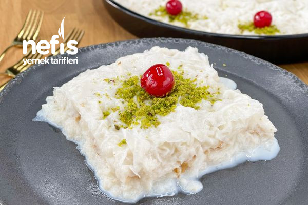

Osmanlı Saray mutfağından günümüze kadar geleni, gelirken de tadının güzelliğini hiç kaybetmeyen güllaç tarifimi denemelisiniz. Oldukça hafif bir tatlı olan güllaç kalorisinin düşük olması sebebiyle Ramazan aylarında sofralarınızdan eksik olmayacak.
Kaç kişilik : 4
Hazırlama süresi : 45 Dakika
Güllaç tarifi için malzemeler:

12 Yaprak güllaç
1.5 L Süt
2 Su bardağı şeker
Çekilmiş ceviz
2 Yemek kaşığı gül suyu isteğe bağlı
Üzeri için :
Toz antep fıstığı
Kiraz şekerlemesi
Güllaç yapılış aşamaları:
Güllaç tatlısını yapmak için; öncelikle süt ve şekeri tencereye alarak ısıtıyoruz, şekerler tamamen erisin. Bu aşamada sütü çok fazla ısıtmanıza gerek yok, şekerin erimesi yeterli olacaktır.
Daha sonra sütü oda sıcaklığında ılınmaya bırakıyoruz. Eğer el yakmayacak şekilde ısıttıysanız tekrar ılıması için beklemenize gerek olmayacaktır. Süt kaynar olursa tatlınız hamur olur o nedenle el yakmayacak şekilde olmalı.
Güllaç yaprağının parlak kısmı üste gelecek şekilde ilkini derince bir tepsiye koyuyoruz.
Üzerine her yanı ıslanacak şekilde bir iki kepçe süt döküyoruz.
Altı güllaç yaprağı için aynı işlemi tekrarlayalım ve 6. katı da ıslattıktan sonra bu kata ceviz serpelim ve üzerine diğer güllaç yapraklarını aynı şekilde ıslatarak serelim.
Kalan şekerli sütün içerisine 2 yemek kaşığı gül suyu ekleyip tatlının üzerine gezdirelim. Burada kullandığınız gül suyunun kozmetik ürünü olmamasına dikkat etmelisiniz.
Hazırladığımız tatlımızı 2 saat kadar buzdolabında muhafaza edelim.
En az 2-3 saat dinlendirdikten sonra üzerini isteğe göre süsleyerek servis edebilirsiniz. Ben toz antep fıstığı ve kiraz şekerlemeleri ile süsledim. Afiyet olsun!